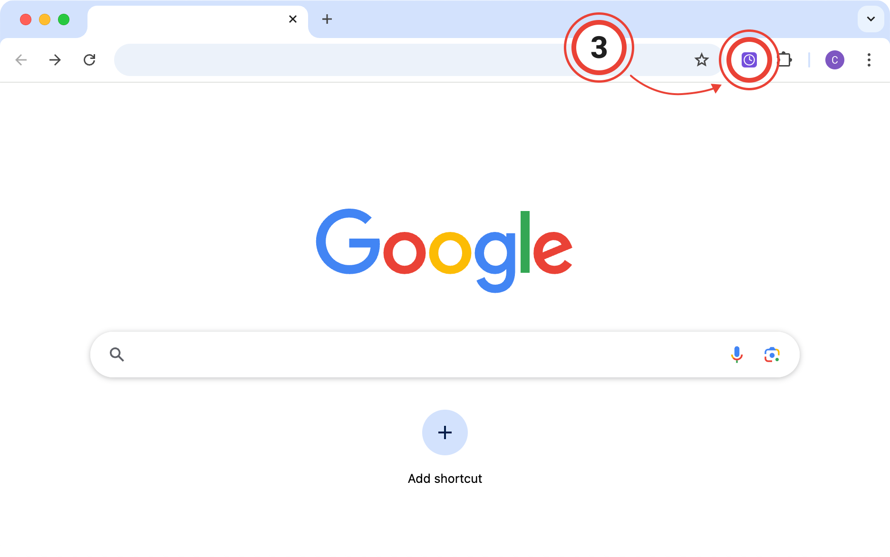
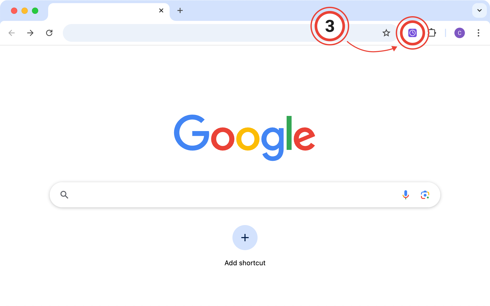

Freelance Time Tracking Installed
Click the puzzle piece (1) in the top right of your browser.
Then, click the little pin (2) next to the extension:
Open the extension (3) on any page to start using Freelance Time Tracking:

Click the puzzle piece (1) in the top right of your browser.
Then, click the little pin (2) next to the extension:
Open the extension (3) on any page to start using Freelance Time Tracking:
